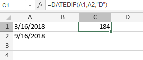

DATEDIF funkcija
Funkcija DATEDIF je jedna od funkcija za datum i vreme. Koristi se za vraćanje razlike između dve vrednosti datuma (početni datum i krajnji datum), na osnovu zadatog intervala (jedinice).
Sintaksa
DATEDIF(start_date, end_date, unit)
Funkcija DATEDIF ima sledeće argumente:
| Argument | Opis |
|---|---|
| start_date | Početni datum perioda. |
| end_date | Krajnji datum perioda. |
| unit | Zadata jedinica intervala. Moguće vrednosti su prikazane u tabeli ispod. |
Argument unit može biti jedna od sledećih vrednosti:
| Jedinica | Objašnjenje intervala |
|---|---|
| Y | Broj kompletnih godina. |
| M | Broj kompletnih meseci. |
| D | Broj dana. |
| MD | Razlika između dana (meseci i godine se ignorišu). |
| YM | Razlika između meseci (dani i godine se ignorišu). |
| YD | Razlika između dana (godine se ignorišu). |
Napomene
Ako je start_date veći od end_date, rezultat će biti #NUM!.
Kako primeniti funkciju DATEDIF.
Primeri
Postoje tri argumenta: start-date = A1 = 16.03.2018; end-date = A2 = 16.09.2018; unit = "D". Funkcija vraća razliku između dva datuma u danima.
